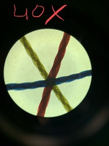
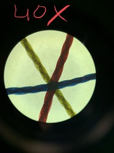

Salil Trehan
During my time at UCR, I have been involved in several programs and organizations that have prepared me to work with medically underserved communities. The most recent being my work as a team member on the STOP Covid-19 project with the UCR School of Medicine.
As a member of the STOP Covid-19 project, I provided support to 3 teams focusing on COVID-19 outreach in the Latinx, Native American, and African American communities of the Inland Empire. These three communities are noticeably the most underserved when looking at their COVID-19 infection and death rates. Working with this team has allowed me to gather and analyze data in these communities. For example, I was given the opportunity to review focus groups that were conducted with a few members from each of these communities. Upon reviewing the transcripts of these focus groups, I worked with my team to maximize outreach within these communities on issues that seemed most prominent or unknown.
Prior to working on the STOP Covid-19 project, I was working on another Covid-19 community project that focused on outreach solely in the Latinx communities. This outreach included providing testing and general Covid information to members of the Latinx community in the Eastern Coachella Valley region. As a part of these projects, I collaborated with county public health members to determine the best ways to disseminate information in order to educate the community.
Throughout my undergraduate career, I have been heavily involved in projects within the Inland Empire communities aiming to improve access to healthcare and the availability of healthcare resources. My work with the COVID-19 projects at the UCR SOM Center for Health Disparities Research Center has provided me with knowledge of the underserved communities of the Inland Empire. Through various focus groups, weekly Covid Chats, town hall meetings, and weekly team meetings, I have learned of the knowledge of health disparities, including scarce availability of health care providers and lack of information amongst several underserved groups. Low-income groups have been more significantly impacted.
The knowledge of public health and health disparities that I have gained in these projects will benefit me when completing my medical education at UCR School of Medicine. I hope to continue my community work with these projects as a UCR medical student. For example, I am currently a board member working with undergraduate and UCR School of Medicine students to establish Coachella Valley Free Clinic as a recognized non-profit organization. If accepted into UCR School of Medicine, I will strive to become a member of the medical student team to continue my work with the clinic.
I hope to further my career in the healthcare field, wokring as a medical doctor in Southern California.
Experience
Research Assistant
• Assists UCR School of Medicine research public health disparities
• Focuses on underserved communities of the Inland Empire, including African Americans, Native Americans, and Latino/Hispanics
• Experience of administering research surveys
Sandwich Artist
• Responsible for food prep and bread baking
• Assisted customers as needed while operating POS system
Operations Manager
• Responsible for operations of low income free clinc
• Reviewed approved volunteer hour sheets
• Recruited volunteers to serve on executive board
• Effectively communicated with medical students, and executive leadership board during weekly meetings
Education
UC Riverside
Portfolio


